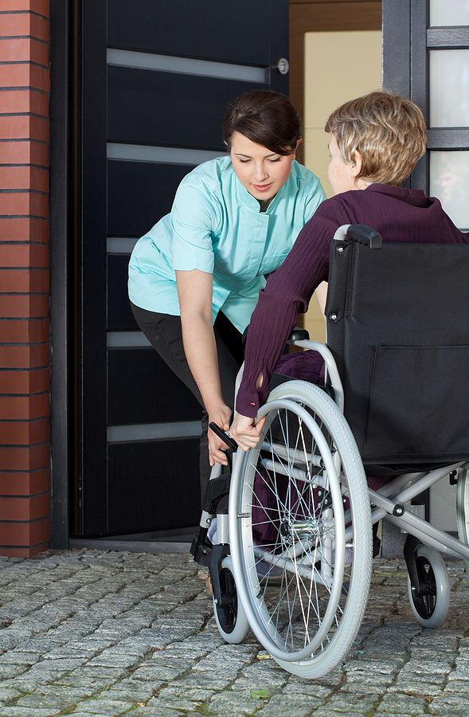

Be the Warmth
Someone Needs
At Sallies HealthWarm Care, our caregivers are the heart of everything we do. If you are compassionate and intrested in joining our team reach out.
Caring with a Smile
A perfect match for every Home
Knowledge Centre
What every family
should know
Foundation
What is a caregiver?
A caregiver is someone compassionate, reliable, and knowledgeable — dedicated to helping seniors live safely and with dignity at home.
Home Care
Benefits of home nursing
In-home nursing keeps seniors in familiar surroundings, reducing hospital readmissions and improving emotional wellbeing significantly.
Safety
Medication management
Missed doses are a leading cause of senior hospitalisation. Professional caregivers provide timely reminders and compliance tracking.
Wellness
Mental health for seniors
Loneliness accelerates cognitive decline. Companion care and consistent human presence are as vital as physical care.
Planning
Personalised care plans
Every client receives a tailored plan covering daily routines, dietary needs, mobility support, and family communication preferences.
Qualities of a
Sallies Caregiver
We carefully select caregivers who bring not just skill, but genuine humanity to every home they serve.
Compassion & Empathy
Our caregivers understand the emotions that come with aging. They connect on a personal level and provide genuine emotional support.
Patience & Understanding
Our caregivers are patient even during difficult moments, communicating clearly and maintaining a calm, positive presence.
Reliability & Trust
Families depend on our caregivers completely. Every caregiver we place is background-checked, reference-verified, and fully trained.
Flexibility & Adaptability
Care needs evolve. Our caregivers adjust their approach and care plans to meet the changing needs of every individual client.
Cultural Competence
We serve a diverse Houston community. Our caregivers provide respectful care that honours each client's cultural background and beliefs.
Professionalism
From punctuality to communication, our caregivers maintain the highest professional standards while always feeling warm and personal.
Team Collaboration
Our caregivers work alongside families, keeping them informed and involved so everyone feels like part of the care team.
Commitment to Growth
We invest in our caregivers through ongoing training, support, and development so they can provide the best possible care.
Common Questions &
ANSWERS.
Questions caregivers and families often ask us; answered simply and honestly.
No formal experience is required. We provide full training. What matters most is that you are compassionate, reliable, and genuinely care about helping others.
We offer flexible schedules — from a few hours a day to full live-in shifts. We work around your availability to find the right fit for both you and our clients.
All applicants go through a thorough background check, reference verification, and skills assessment before being matched with any client.
Absolutely. Our team provides ongoing support, regular check-ins, and continuous training opportunities so you always feel confident and valued.
We primarily serve the greater Houston, TX area. We try to match caregivers with clients who are close to where they live.
How to Start Your Care Journey
-
Call and speak to one of our friendly team who will discuss the setup process and outline our care packages.
-
Request a home visit where we will provide you with a free, no-obligation assessment of your loved one's needs.
-
Once agreed, we will set up your personalised care package and introduce you to your dedicated Care Worker.
